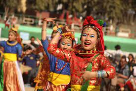
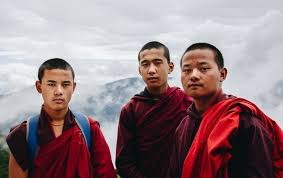
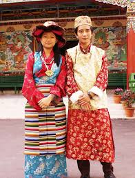

Believed to be of Tibetan origin and modified by the Nepalese cuisine the momos are the lifeline of Sikkim. Momos are steamed buns with a filling. It typically consists of two parts - the cover and the filling. The cover is made of dough of white flour and water. Sometimes yeast or baking soda is also added to the dough to enhance the texture of the momos.
Originally these momos were made with ground meat fillings, but over the years a lot of modifications have been made that have made dumplings even better. From Tofu (Paneer) to cheese, everything can be included in the filling. To get the best momos in Sikkim, one should visit The Roll House and The Taste of Tibet in Gangtok.
Where to Try: Shuffle Momos, Momo.co

Thukpa is a kind of noodle soup of Tibetan origin that has found its way to being one of the most loved food in Sikkim. One can find both vegetarian and chicken versions of the dish. One can find almost every kind of locally grown vegetable in this soup, but the most common ones are carrots, bell peppers, spinach, cauliflower and celery. Thukpa is available in almost every cafe and restaurant, but it is better to try it from a local vendor as they provide you with the best and most authentic taste that you can find.
Where to Try: Taste of Tibet
Phagshapa is a strip of pork fat that is stewed with dry chillies and radish. A spicy and tangy endeavour of this Sikkimese dish is rich in proteins and is made with no oil. The Golden Dragon hotel in Gangtok serves the most authentic and delicious Phagshapa in the whole of Sikkim.
Where to Try: The Golden Dragon Hotel
Bread stuffed with ground beef and cabbage made into semi-circles and then deep-fried is everything that you need to know about this famous food of Sikkim. Crispy on the outside and soft and juicy on the inside, this is what you get when you take the first bite into the golden fried dumpling. With different people having different dietary demands, many variations have been done to the traditional dish. Among the more popular variations of the dish include cheese and tofu versions. The Roll House in Gangtok is the best place to try one of these.
Where to Try: The Roll House, Gangtok
Gundruk is a food of Nepalese origin and is one of the staple foods of Sikkim. Gundruk is a leafy dish that is completely vegan and is made out of some leaves of mustard, cabbage or radish. Authentic Gundruk is only found in villages that people make in their households. It is rich in roughage and helps in maintaining the metabolism of the body. Traditionally this Sikkimese dish is made in an earthen pot, but people have started using other ways of making the same dish. This is one food that has remained the same even after ages and seems to show little alteration.
Where to Try: Hill Queen

Sinki is another traditional dish of Sikkim that has not shown any major change either in the ingredients or in the making process. It is very similar to Gundruk but is made out of radish taproots. These radish roots are chopped and put into bamboo and pressed over with straw. This bamboo is covered with vegetation and mud for about a month and is allowed to ferment. This month-long prepared Sinki can now stay fresh for a year and is ready to be used in stews and soups. It can also be used as a pickle and eaten with parathas and other dishes.
Where to Try: Hill Queen

Dress
The dress for women for the lower half of the body is called Rignai in Tripuri and for the upper half of the body cloth has two parts Risa and Rikutu. Risa covers the chest part and the rikutu covers whole of upper half of the body.Image result for traditional dress of tripura
The traditional costume for men in Tripura is a towel, known as Rikutu Gamcha. Kubai is one type of shirt. Men wear Rikutu Gamcha with Kubai. To protect from the excessive heat, Tripura Men wear a turban or Pagri over their heads during the summer.
 